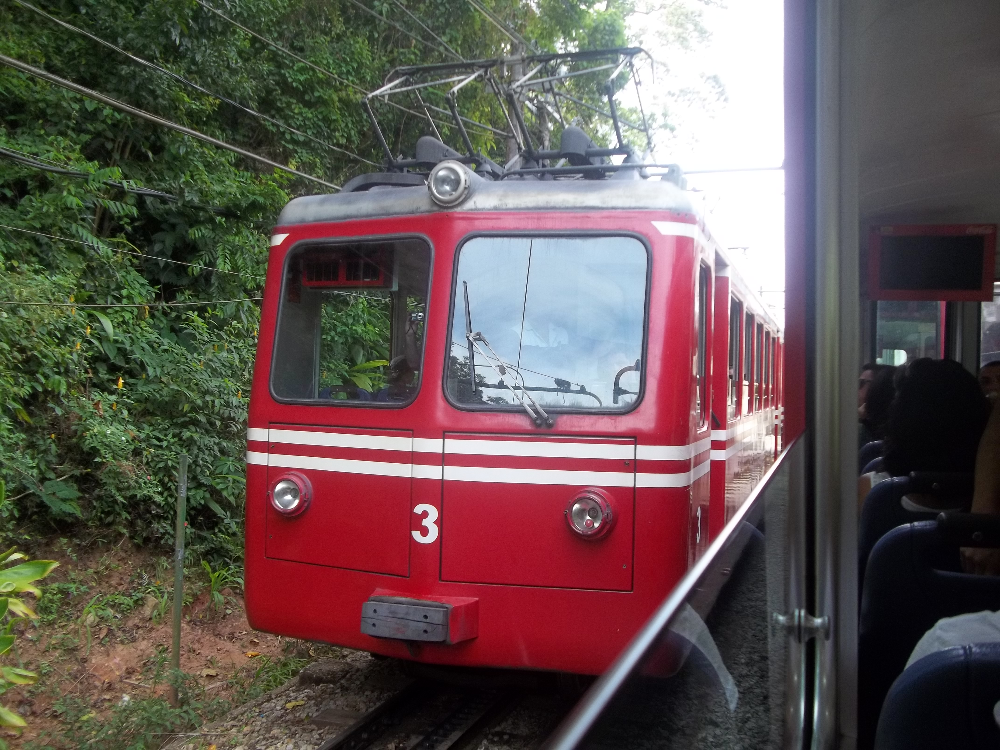
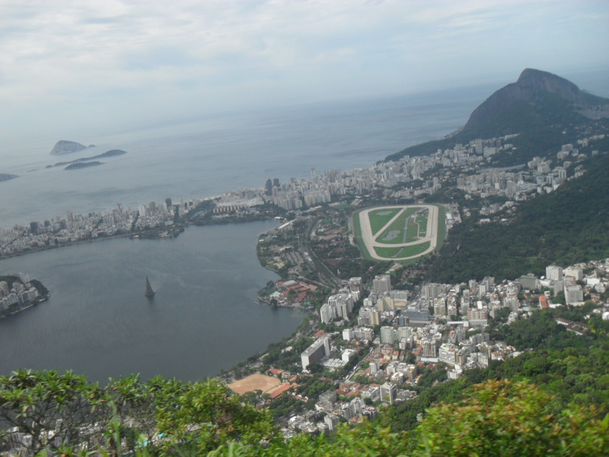
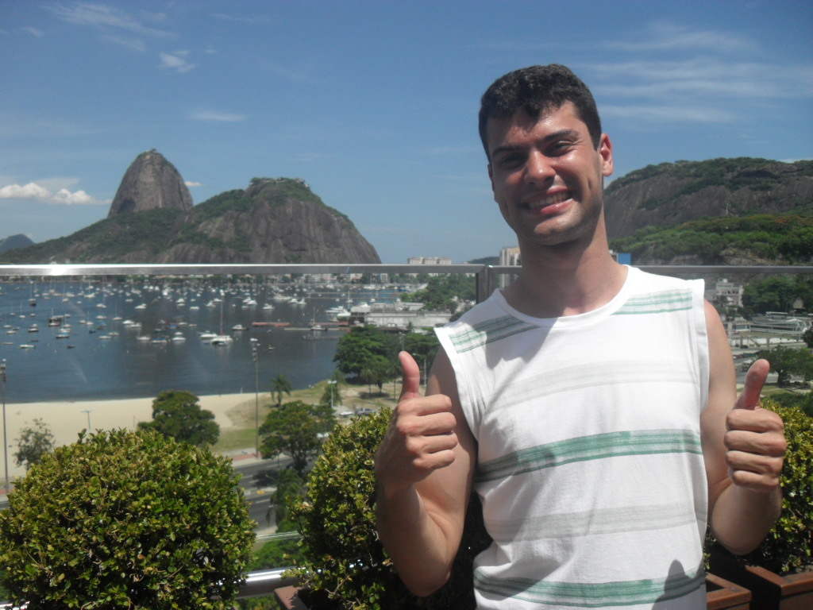
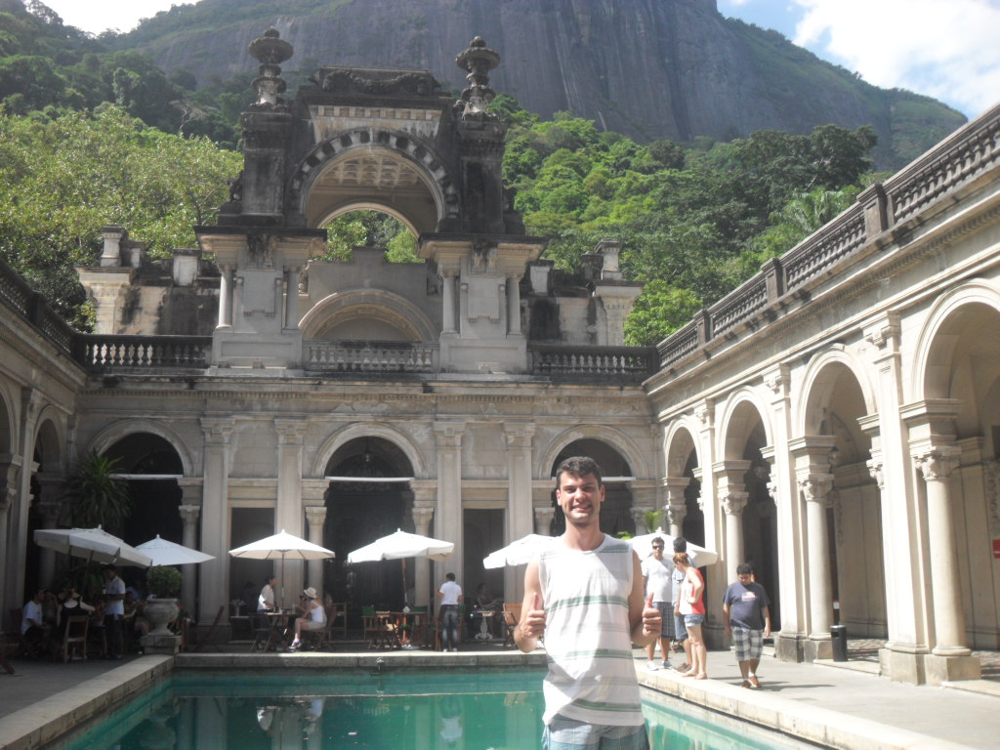
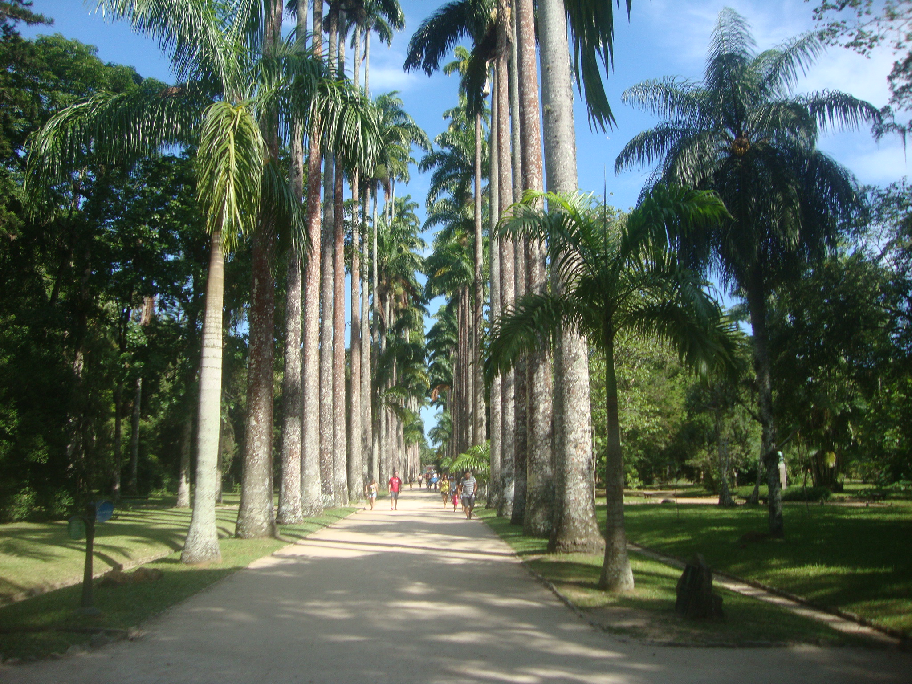
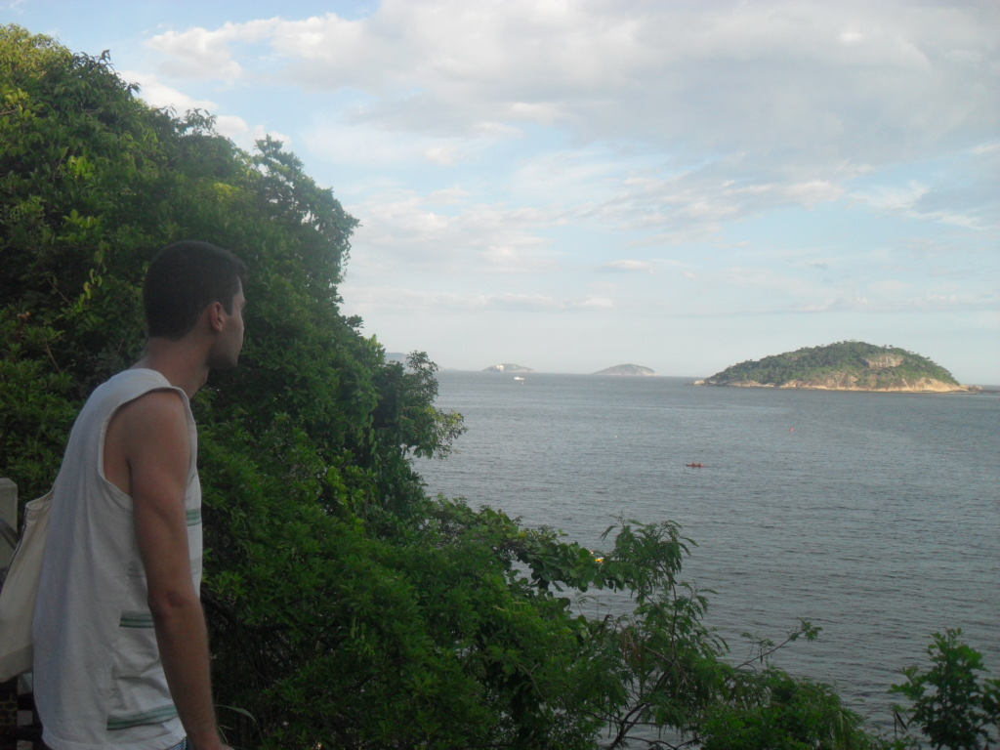

Rio de Janeiro
Período de 28/12/2012 a 02/01/2013
Terceiro dia (30/12/2013)
Principais atrações:
- Cristo Redentor
- Botafogo Praia Shopping
- Parque Lage
- Jardim Botânico
- Pista Cláudio Coutinho
- Pão de Açúcar
O que fizemos:
Acordamos bem cedo, pegamos Metrô Flamengo, descemos Largo do Machado, pegamos ônibus Cosme Velho, direção para estação do trem Corcovado.
{kind=link}
Pegamos o trem Corcovado, subimos ao Morro do Corcovado, descemos, e subir muitas escadas enquanto apreciamos a paisagem urbana e natureza. Chegamos a pé do Cristo Redentor.
{kind=link}

{kind=link}
Descemos de trem Corcovado para a estação Cosme Velho, pegamos ônibus indo para Metrô Largo do Machado, depois, descemos a estação Botafogo, para aproveitamos almoço e tiramos as fotos no Mirante Panorâmica, vista fundo de enseada Botafogo e Pão de Açúcar.
{kind=link}
Após do almoço, pegamos ônibus, utilizamos Metrô na Superficie, descemos o ponto Jardim Botânico, antes de ir ao Jardim Botânico, nós fomos Parque Lage. 
{kind=link}
Logo após, Parque Lage, nós caminhamos ao Jardim Botânico, pagamos pela metade por ser deficiente, entramos e apreciamos a natureza.
{kind=link}
Pegamos ônibus direto para Praia Vermelha, para conhecer e tiramos a foto na Pista Cláudio Coutinho, que é acesso lado direito da Praia Vermelha, neste local, é possível subir Morro da Urca sem subir bondinho de Pão de Açúcar. Nós optamos subir o bonhdinho.
{kind=link}